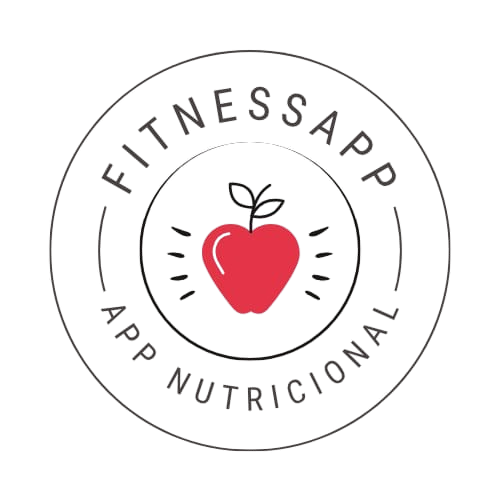

Transforma tu vida con NuttriMe
Tu compañero ideal para alcanzar tus metas de salud y bienestar.
Descarga gratuitaTu salud, tu control: La app que transforma tu bienestar
Bienvenido a la revolución del fitness y la nutrición. Nuestra app te ayuda a llevar un estilo de vida saludable con un enfoque personalizado y fácil de usar. Controla lo que comes, monitorea tu actividad física y recibe recomendaciones adaptadas a tus objetivos. Ya sea que quieras perder peso, ganar músculo o simplemente mejorar tus hábitos, aquí encontrarás las herramientas para lograrlo de manera efectiva y sostenible. ¡Empieza hoy y toma el control de tu bienestar!
¿Por qué de nuestra iniciativa?
Llevar un estilo de vida saludable no tiene por qué ser complicado. Estudios han demostrado que las personas que registran su alimentación y actividad física tienen el doble de probabilidades de alcanzar sus objetivos de peso y bienestar. Con nuestra app, la calidad de tus alimentos y el gasto energético diario de manera fácil y efectiva. Además, recibirás recomendaciones personalizadas para mejorar tu nutrición sin restricciones innecesarias. La Organización Mundial de la Salud recomienda al menos 150 minutos de actividad física moderada a la semana para mantener un buen estado de salud. Nuestra app te ayuda a alcanzar esta meta registrando automáticamente tus entrenamientos y ofreciéndote planes adaptados a tu nivel y estilo de vida. Con gráficos de progreso, recordatorios inteligentes y consejos basados en estudios científicos, transformar tu bienestar nunca ha sido tan accesible. Es hora de dejar atrás las dietas extremas y los entrenamientos sin rumbo: con nuestra tecnología, cada paso que das te acerca a una versión más saludable de ti.